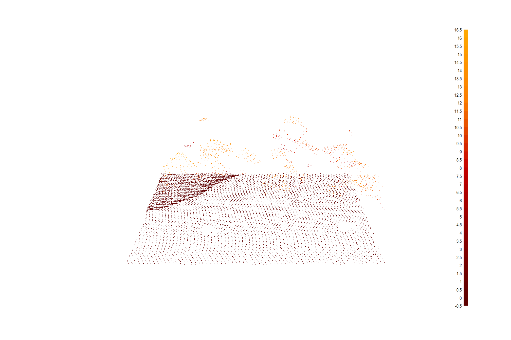
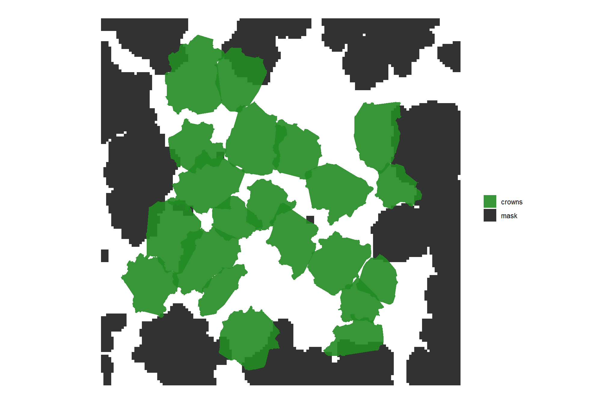
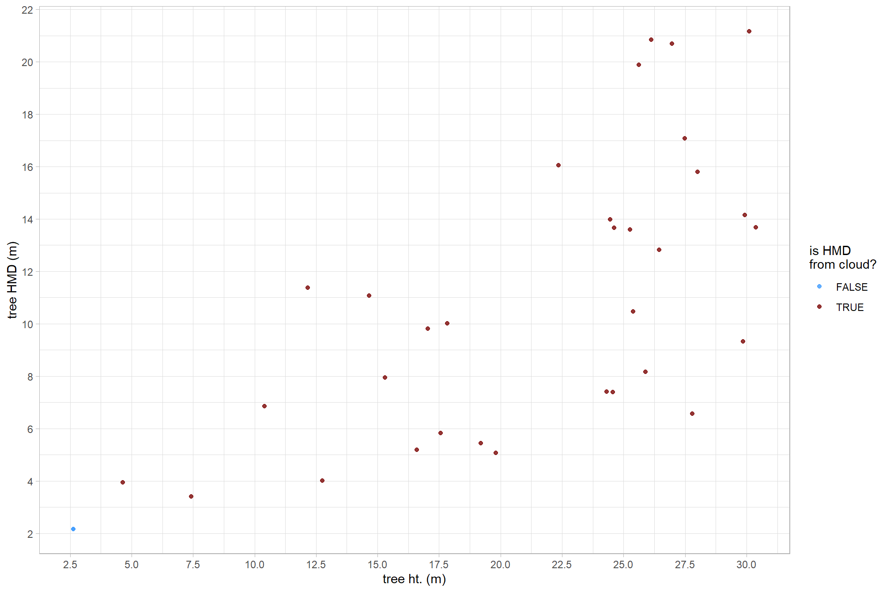
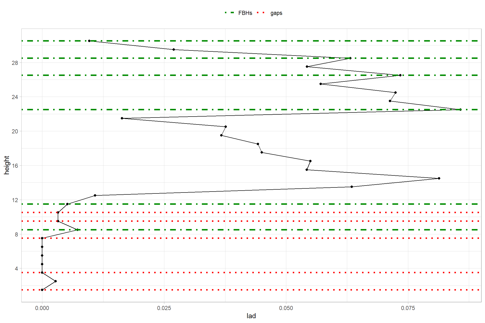

Section 5 Appendix
In this section we’ll provide some more detail and work through examples for select processes to extract individual tree components using aerial point cloud data
5.1 Example lidar data
we’ll use some of our trees and height-normalized point cloud data generated in our point cloud processing
load the tree crown polygons
# get the data from already run
crowns_sf <-
list.files(
"../data/point_cloud_processing_delivery"
, pattern = "final_detected_crowns.*\\.gpkg$"
, full.names = T
) %>%
normalizePath() %>%
purrr::map(\(x)
sf::st_read(
dsn = x
, quiet = T
)
) %>%
dplyr::bind_rows()load the central 0.1 ha area of our study area
aoi <-
sf::st_read("../data/point_cloud_processing_delivery/raw_las_ctg_info.gpkg") %>%
sf::st_union() %>%
sf::st_centroid() %>%
sf::st_buffer(sqrt(1000/4), endCapStyle = "SQUARE") %>%
sf::st_transform(sf::st_crs(crowns_sf))## Reading layer `raw_las_ctg_info' from data source
## `C:\Data\usfs\lidar_phys_fire_mods\data\point_cloud_processing_delivery\raw_las_ctg_info.gpkg'
## using driver `GPKG'
## Simple feature collection with 42 features and 34 fields
## Geometry type: POLYGON
## Dimension: XY
## Bounding box: xmin: 467000 ymin: 3808000 xmax: 473000 ymax: 3815000
## Projected CRS: NAD83(2011) / UTM zone 12Nfilter for trees in the aoi
crowns_sf <- crowns_sf %>%
# join so we get the full crown
dplyr::inner_join(
sf::st_intersection(crowns_sf, aoi) %>%
sf::st_drop_geometry() %>%
dplyr::distinct(treeID)
, by = "treeID"
) %>%
# make treeID numeric for later
dplyr::mutate(
treeID_bu = treeID
, treeID = treeID %>% as.factor %>% as.numeric()
) %>%
cloud2trees::simplify_multipolygon_crowns()now, we’ll load in the point cloud data for our aoi
las_ctg <- lidR::readLAScatalog("../data/point_cloud_processing_delivery/norm_las/")
lidR::opt_progress(las_ctg) <- F
las <- lidR::clip_roi(las_ctg, crowns_sf %>% sf::st_bbox() %>% sf::st_as_sfc() %>% sf::st_buffer(2))plot a sample
las %>%
lidR::plot(
color = "Z", bg = "white", legend = T
, pal = harrypotter::hp(n=50, house = "gryffindor")
)
now we’ll attach the treeID column to the normalized las file
las <- cloud2trees::polygon_attribute_to_las(las = las, poly_df = crowns_sf, attribute = "treeID", force_crs = T)let’s look at our point cloud colored by treeID

let’s filter for a single tree
# sf
one_tree_sf <- crowns_sf %>% dplyr::filter(tree_height_m == max(tree_height_m)) %>% dplyr::slice(1)
# las
one_tree_las <- las %>% lidR::filter_poi(treeID==one_tree_sf$treeID)check our one tree point cloud
# plot it
plot3D::scatter3D(
x = one_tree_las@data$X
, y = one_tree_las@data$Y
, z = one_tree_las@data$Z
, colvar = one_tree_las@data$Z
, cex = 0.6, pch = 19
, colkey = T
, phi = 11
, col = harrypotter::hp(n=50, house = "gryffindor")
, main ="single tree point cloud"
)
5.2 CBH Process
Let’s go through the process to extract CBH from the point cloud using the same settings as in our point cloud processing. CBH is extracted directly from the height normalized point cloud using the process outlined in Viedma et al. (2024) and implemented via cloud2trees::ladderfuelsr_cbh(). See cloud2trees::trees_cbh() for a simple way to extract tree CBH from a height normalized point cloud based on a tree list with crown polygons.
# CALL IT
ladderfuelsr_cbh_ans <- cloud2trees::ladderfuelsr_cbh(
las = one_tree_las
, min_vhp_n = 3
, voxel_grain_size_m = 1
, dist_btwn_bins_m = 1
, min_fuel_layer_ht_m = 1
, lad_pct_gap = 25
, lad_pct_base = 25
, num_jump_steps = 1
, min_lad_pct = 10
, frst_layer_min_ht_m = 1
)let’s see what we got
## [1] "gaps_fbhs" "lad_profile" "gaps_perc" "metrics_distance"
## [5] "metrics_depth" "real_fbh" "real_depth" "eff_gap"
## [9] "layers_lad_df" "cbh_metrics"## Rows: 30
## Columns: 3
## $ treeID <fct> 21, 21, 21, 21, 21, 21, 21, 21, 21, 21, 21, 21, 21, 21, 21, 21,…
## $ height <dbl> 1.5, 2.5, 3.5, 4.5, 5.5, 6.5, 7.5, 8.5, 9.5, 10.5, 11.5, 12.5, …
## $ lad <dbl> 0.000000000, 0.002752691, 0.000000000, 0.000000000, 0.000000000…Create our own plot of the gaps and fuel layers base height in the vertical tree leaf area density (LAD) profile. Almeida et al. (2019) describe the process for generating leaf area density profiles and make the process accessible via the leafR package. In cloud2trees, methods to generate LAD profiles are packaged in cloud2trees::leafr_for_ladderfuelsr() which enables batch processing of individual tree point clouds and generates the input needed to extract tree CBH
ggplot() +
geom_path(data = ladderfuelsr_cbh_ans$lad_profile, mapping = aes(x = lad, y = height)) +
geom_point(data = ladderfuelsr_cbh_ans$lad_profile, mapping = aes(x = lad, y = height)) +
# gaps data
geom_hline(
data = ladderfuelsr_cbh_ans$gaps_fbhs %>%
dplyr::select(
tidyselect::starts_with("gap") & !tidyselect::starts_with("gap_")
) %>%
tidyr::pivot_longer(dplyr::everything())
, aes(yintercept = value, color = "gaps")
, linetype = "dotted"
, lwd = 1.2
) +
# fbh data
geom_hline(
data = ladderfuelsr_cbh_ans$gaps_fbhs %>%
dplyr::select(
tidyselect::starts_with("cbh") & !tidyselect::starts_with("cbh_")
) %>%
tidyr::pivot_longer(dplyr::everything())
, aes(yintercept = value, color = "FBHs")
, linetype = "dotdash"
, lwd = 1.2
) +
scale_color_manual(values = c("green4", "red"), name = "") +
scale_y_continuous(breaks = scales::extended_breaks(10)) +
theme_light() +
theme(legend.position = "top")
note, the gap and cbh columns in ladderfuelsr_cbh_ans$gaps_fbhs contain the data needed for the plot ( but not the gap_ and cbh_ columns ;/ ).
but what are these columns?
cbh- Height of the fuel layer base height (m)gap- Height of gap between fuel layers (m)
5.2.1 Return CBH Metrics
## Rows: 1
## Columns: 29
## $ treeID <fct> 21
## $ treeID1 <dbl> 21
## $ dptf1 <dbl> 19
## $ effdist1 <dbl> 10
## $ Hcbh1 <dbl> 11.5
## $ Hdist1 <dbl> 10.5
## $ Hdptf1 <dbl> 30.5
## $ max1 <dbl> 30.5
## $ Hcbh1_Hdptf1 <dbl> 98.31702
## $ max_height <dbl> 30.5
## $ nlayers <dbl> 1
## $ maxlad_Hcbh <dbl> 11.5
## $ maxlad_Hdist <dbl> 10.5
## $ maxlad_Hdptf <dbl> 30.5
## $ maxlad_dptf <dbl> 19
## $ maxlad_effdist <dbl> 10
## $ maxlad_lad <dbl> 98.31702
## $ max_Hcbh <dbl> 11.5
## $ max_Hdist <dbl> 10.5
## $ max_Hdptf <dbl> 30.5
## $ max_dptf <dbl> 19
## $ max_effdist <dbl> 10
## $ max_lad <dbl> 98.31702
## $ last_Hcbh <dbl> 11.5
## $ last_Hdist <dbl> 10.5
## $ last_Hdptf <dbl> 30.5
## $ last_dptf <dbl> 19
## $ last_effdist <dbl> 10
## $ last_lad <dbl> 98.31702what are these?
- treeID: tree ID with strings and numeric values
- treeID1: tree ID with only numeric values
- dptf: Depth of fuel layers (m) after considering distances greater than the actual height bin step
- effdist: Effective distance between consecutive fuel layers (m) after considering distances greater than any number of steps
- Hcbh: Base height of each fuel separated by a distance greater than the certain number of steps
- Hdptf: Height of the depth of fuel layers (m) after considering distances greater than the actual step
- Hdist: Height of the distance (> any number of steps) between consecutive fuel layers (m)
- Hcbh_Hdptf - Percentage of LAD values comprised in each effective fuel layer
- maxlad_Hcbh - Height of the CBH of the segmented tree based on the maximum LAD percentage
- maxlad1_Hcbh - Height of the CBH from the second fuel layer when the maximum LAD occurred in the first fuel layer but its depth <= “hdepth1_height”
- max_Hcbh - Height of the CBH of the segmented tree based on the maximum distance found in its profile
- last_Hcbh - Height of the CBH of the segmented tree based on the last distance found in its profile
- maxlad_ - Values of distance and fuel depth and their corresponding heights at the maximum LAD percentage
- maxlad1_ - Values of distance and fuel depth and their corresponding heights for the second fuel layer when the maximum LAD occurred in the first fuel layer but its depth <= “hdepth1_height”
- max_ - Values of distance and fuel depth and their corresponding heights at the maximum distance
- last_ - Values of distance and fuel depth and their corresponding heights at the last distance
- nlayers - Number of effective fuel layers
- max_height - Maximum height of the tree profile
there are also some plotting functions
# Generate plots for fuels LAD metrics
plots_cbh_maxlad <- LadderFuelsR::get_plots_cbh_LAD(
LAD_profiles = ladderfuelsr_cbh_ans$lad_profile
, cbh_metrics = ladderfuelsr_cbh_ans$cbh_metrics
, min_height = 0.5
)
plots_cbh_maxdist <- LadderFuelsR::get_plots_cbh_maxdist(
LAD_profiles = ladderfuelsr_cbh_ans$lad_profile
, cbh_metrics = ladderfuelsr_cbh_ans$cbh_metrics
, min_height = 0.5
)
plots_cbh_lastdist <- LadderFuelsR::get_plots_cbh_lastdist(
LAD_profiles = ladderfuelsr_cbh_ans$lad_profile
, cbh_metrics = ladderfuelsr_cbh_ans$cbh_metrics
, min_height = 0.5
)
# patchwork them
(plots_cbh_maxlad[[1]] + labs(title = "get_plots_cbh_LAD")) +
(plots_cbh_maxdist[[1]] + labs(title = "get_plots_cbh_maxdist")) +
(plots_cbh_lastdist[[1]] + labs(title = "get_plots_cbh_lastdist")) +
patchwork::plot_layout(ncol = 2)
these plots represent the three criteria to define the CBH in a segmented tree:
get_plots_cbh_LAD= the fuel layer containing the maximum LAD percentage (column namedmaxlad_Hcbh)get_plots_cbh_maxdist= the fuel layer located at the highest distance (column namedmax_Hcbh)get_plots_cbh_lastdist= the fuel layer separated by the last effective distance (column namedlast_Hcbh)
in our point cloud processing we used the fuel layer separated by the last effective distance (column named last_Hcbh) by setting the parameter which_cbh = "lowest" in cloud2trees::trees_cbh()

5.2.2 CBH on the point cloud
make a view of the CBH we estimated plotted on the point cloud
# make a matrix to represent the cbh
x_temp <- seq(
min(one_tree_las@data$X)
, max(one_tree_las@data$X)
, length.out = 2
)
y_temp <- seq(
min(one_tree_las@data$Y)
, max(one_tree_las@data$Y)
, length.out = 2
)
xy_temp <- expand.grid(x = x_temp, y = y_temp)
z_temp <- matrix(
rep(
ladderfuelsr_cbh_ans$cbh_metrics$last_Hcbh
, nrow(xy_temp)
)
, nrow = length(x_temp), ncol = length(y_temp)
)
# plot it
plot3D::scatter3D(
x = one_tree_las@data$X
, y = one_tree_las@data$Y
, z = one_tree_las@data$Z
, colvar = one_tree_las@data$Z
, cex = 0.6, pch = 19
, colkey = T
, phi = 11
, col = harrypotter::hp(n=50, house = "gryffindor")
, main ="CBH shown in black"
, surf = list(
x = x_temp
, y = y_temp
, z = z_temp
, facets = NA
, border = "black"
, lwd = 2
)
)5.3 HMD Process
Let’s go through the process to extract height of the maximum crown diameter (HMD) from the point cloud using the same settings as in our point cloud processing. HMD is extracted directly from the height normalized point cloud by finding the height of the non-ground point farthest from the tree center (i.e. tree top). See cloud2trees::trees_hmd() for a simple way to extract tree CBH from a height normalized point cloud based on a tree list with crown polygons.
5.3.1 One Tree Example
this is the tidy data process using the data frame of the point cloud grouped by treeID implemented in cloud2trees::trees_hmd()
look at this point cloud data
## Rows: 868
## Columns: 19
## $ X <dbl> 469989.5, 469989.4, 469989.4, 469989.3, 469989.2, 46…
## $ Y <dbl> 3811497, 3811498, 3811498, 3811498, 3811499, 3811499…
## $ Z <dbl> 0, 0, 0, 0, 0, 0, 0, 0, 0, 0, 0, 0, 0, 0, 0, 0, 0, 0…
## $ gpstime <dbl> 62346815, 62346815, 62346815, 62346815, 62346815, 62…
## $ Intensity <int> 35209, 35466, 33924, 32896, 33410, 33667, 34438, 357…
## $ ReturnNumber <int> 1, 1, 1, 1, 1, 1, 1, 1, 1, 1, 1, 1, 1, 1, 1, 1, 1, 1…
## $ NumberOfReturns <int> 1, 1, 1, 1, 1, 1, 1, 1, 1, 1, 1, 1, 1, 1, 1, 1, 1, 1…
## $ ScanDirectionFlag <int> 0, 0, 0, 0, 0, 0, 0, 1, 1, 1, 1, 1, 1, 1, 1, 0, 0, 0…
## $ EdgeOfFlightline <int> 0, 0, 0, 0, 0, 0, 0, 0, 0, 0, 0, 0, 0, 0, 0, 0, 0, 0…
## $ Classification <int> 2, 2, 2, 2, 2, 2, 2, 2, 2, 2, 2, 2, 2, 2, 2, 2, 2, 2…
## $ ScannerChannel <int> 0, 0, 0, 0, 0, 0, 0, 0, 0, 0, 0, 0, 0, 0, 0, 0, 0, 0…
## $ Synthetic_flag <lgl> FALSE, FALSE, FALSE, FALSE, FALSE, FALSE, FALSE, FAL…
## $ Keypoint_flag <lgl> FALSE, FALSE, FALSE, FALSE, FALSE, FALSE, FALSE, FAL…
## $ Withheld_flag <lgl> FALSE, FALSE, FALSE, FALSE, FALSE, FALSE, FALSE, FAL…
## $ Overlap_flag <lgl> FALSE, FALSE, FALSE, FALSE, FALSE, FALSE, FALSE, FAL…
## $ ScanAngle <dbl> -10.002, -10.002, -10.002, -10.002, -10.002, -10.002…
## $ UserData <int> 0, 0, 0, 0, 0, 0, 0, 0, 0, 0, 0, 0, 0, 0, 0, 0, 0, 0…
## $ PointSourceID <int> 488, 488, 488, 488, 488, 488, 488, 488, 488, 488, 48…
## $ treeID <dbl> 21, 21, 21, 21, 21, 21, 21, 21, 21, 21, 21, 21, 21, …the key components we’ll use are the xyz coordinates
pts_temp <- one_tree_las@data %>%
dplyr::rename_with(.cols = -c(treeID), .fn = tolower) %>%
# get rid of ground, water, and noise points
dplyr::filter(!classification %in% c(2,9,18)) %>%
dplyr::group_by(treeID) %>% # this is key
dplyr::mutate(
# find the highest point in the tree as the tree "center"
is_tree_center = z==max(z)
, tree_center_x = dplyr::first(ifelse(is_tree_center, x, NA), na_rm = T) # first in case many points are center
, tree_center_y = dplyr::first(ifelse(is_tree_center, y, NA), na_rm = T) # first in case many points are center
# Calculate the distance from the center to the point
, dist_to_center = sqrt((x - tree_center_x)^2 + (y - tree_center_y)^2)
, is_max_dist_to_center = dist_to_center == max(dist_to_center)
# classify points for plotting
, grp_pt = dplyr::case_when(
is_tree_center ~ 0
, is_max_dist_to_center ~ 1
, T ~ 2
) %>%
factor(
ordered = T
, levels = 0:2
, labels = c("tree center", "farthest point\nfrom center", "other")
)
) %>%
dplyr::ungroup()let’s plot all of that in 2-D space as if we are looking down at the tree from above
# plot
ggplot(data = pts_temp, mapping = aes(x=x,y=y,color=z, shape = grp_pt)) +
geom_point(
mapping = aes(
size = ifelse(is_tree_center | is_max_dist_to_center, 1.5, 1)
)
) +
harrypotter::scale_color_hp("gryffindor", name = "Z (ht m)") +
scale_shape_manual(values = c(17, 15, 16), name = "") +
labs(
title = "single tree point cloud HMD process"
, caption = paste0(
"HMD = "
, round(
pts_temp %>%
dplyr::filter(is_max_dist_to_center) %>%
dplyr::slice_head(n=1) %>%
dplyr::pull(z)
, 1
)
, " m"
, "\n(ht of point farthest from center)"
)
) +
theme_light() +
theme(axis.text = element_blank()) +
guides(size = "none")
look at the data on the point farthest from the tree center
pts_temp %>%
dplyr::filter(is_max_dist_to_center) %>%
dplyr::select(x,y,z,dist_to_center,is_max_dist_to_center) %>%
dplyr::glimpse()## Rows: 1
## Columns: 5
## $ x <dbl> 469987.8
## $ y <dbl> 3811496
## $ z <dbl> 13.68
## $ dist_to_center <dbl> 5.433323
## $ is_max_dist_to_center <lgl> TRUEthe HMD for this tree is contained in the z column
the cloud2trees::trees_hmd() process will give us the same answer (hopefully)
# the function requires a LAScatalog
file_temp <- tempfile(fileext = ".las")
lidR::writeLAS(one_tree_las, file = file_temp)
# trees_hmd that
cloud2trees::trees_hmd(trees_poly = one_tree_sf, norm_las = file_temp) %>%
sf::st_drop_geometry() %>%
dplyr::select(treeID, max_crown_diam_height_m)## treeID max_crown_diam_height_m
## 1 21 13.68success!
5.3.2 Tree List Example
let’s work with our clipped las data and tree crown list that we created above and use cloud2trees::trees_hmd() to attempt a full census of tree HMD extraction, if HMD extraction is unsuccessful we’ll estimate the missing HMD values using the successfully extracted trees as training data
# the function requires a LAScatalog
file_temp <- tempfile(fileext = ".las")
lidR::writeLAS(las, file = file_temp)
# call the function
trees_hmd_ans <- cloud2trees::trees_hmd(
trees_poly = crowns_sf
, norm_las = file_temp
, tree_sample_prop = 1
, estimate_missing_hmd = T
)What is this data?
trees_hmd_ans %>%
dplyr::select(treeID, tree_height_m, max_crown_diam_height_m, is_training_hmd) %>%
dplyr::glimpse()## Rows: 34
## Columns: 5
## $ treeID <dbl> 5, 25, 34, 21, 6, 24, 26, 9, 3, 8, 30, 32, 23,…
## $ tree_height_m <dbl> 19.19, 30.10, 25.27, 30.38, 15.31, 24.46, 25.6…
## $ max_crown_diam_height_m <dbl> 5.44, 21.17, 13.59, 13.68, 7.94, 13.99, 19.88,…
## $ is_training_hmd <lgl> TRUE, TRUE, TRUE, TRUE, TRUE, TRUE, TRUE, TRUE…
## $ geom <POLYGON [m]> POLYGON ((469982.8 3811510,..., POLYGO…Let’s look at the relationship between tree height and tree HMD as extracted from the point cloud. Note, that we do not expect a perfect linear relationship between tree height and HMD throughout the entire height range because HMD is also determined spatially (e.g. as a fire moves through a stand).
trees_hmd_ans %>%
dplyr::arrange(is_training_cbh) %>%
ggplot2::ggplot(
mapping = ggplot2::aes(x = tree_height_m, y = max_crown_diam_height_m, color=is_training_hmd)
) +
ggplot2::geom_point() +
ggplot2::labs(x = "tree ht. (m)", y = "tree HMD (m)") +
ggplot2::scale_y_continuous(breaks = scales::extended_breaks(n=12)) +
ggplot2::scale_x_continuous(breaks = scales::extended_breaks(n=14)) +
ggplot2::scale_color_viridis_d(option = "turbo", begin = 0.2, alpha = 0.8, name = "is HMD\nfrom cloud?") +
ggplot2::theme_light()
We can look at this data spatially too.
trees_hmd_ans %>%
dplyr::arrange(is_training_hmd) %>%
ggplot2::ggplot(mapping = ggplot2::aes(fill = max_crown_diam_height_m, color=is_training_hmd)) +
ggplot2::geom_sf() +
ggplot2::scale_color_viridis_d(option = "turbo", begin = 0.2, alpha = 0.8, name = "is HMD\nfrom cloud?") +
ggplot2::scale_fill_distiller(palette = "Greys", name = "tree HMD (m)", direction = 1) +
ggplot2::theme_void() +
ggplot2::theme(
legend.position = "top", legend.direction = "horizontal"
, panel.border = ggplot2::element_rect(color = "black", fill = NA)
) +
ggplot2::guides(
color = ggplot2::guide_legend(override.aes = list(lwd = 3, fill = NA))
)